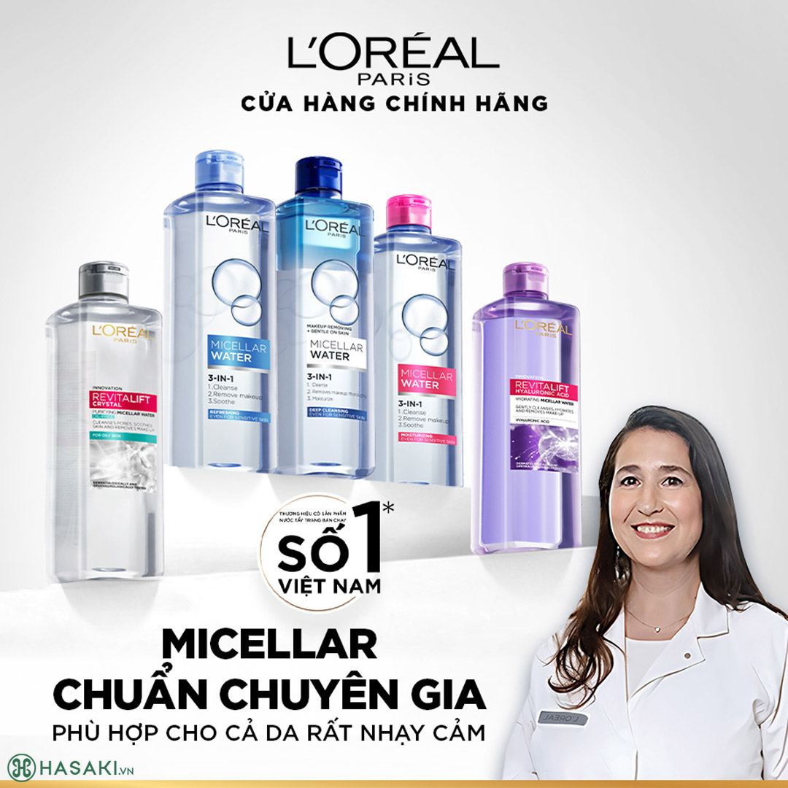
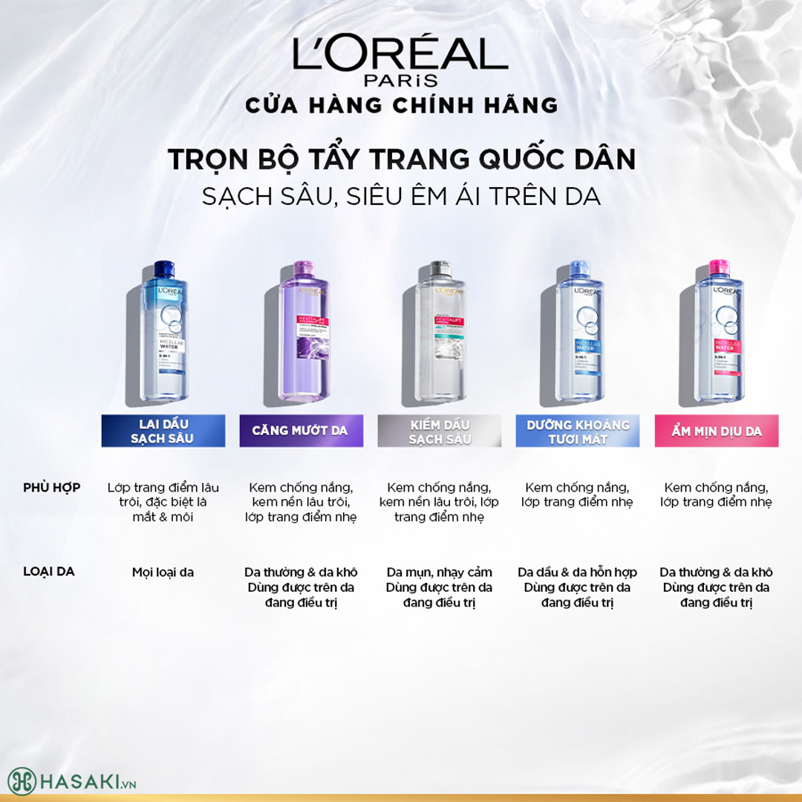

Bạn muốn nhận hàng trước 18h hôm nay (Miễn phí).
Đặt hàng trong 8 phút tới và chọn giao hàng 2H ở bước thanh toán.
Nước Tẩy Trang L'Oréal là dòng sản phẩm tẩy trang mặt dạng nước đến từ thương hiệu L'Oreal Paris, được ứng dụng công nghệ Micellar dịu nhẹ giúp làm sạch da, lấy đi bụi bẩn, dầu thừa và cặn trang điểm chỉ trong một bước, mang lại làn da thông
thoáng, mềm mượt mà không hề khô căng.

Dòng sản phẩm Nước Tẩy Trang L'Oréal Paris Micellar Water hiện đã có mặt tại Hasaki với 5 phân loại phù hợp cho từng nhu cầu khác nhau cho bạn lựa chọn:
L'Oréal Paris Micellar Water 3-in-1 Refreshing Even For Sensitive Skin (Xanh dương nhạt): Giúp làm sạch lớp trang điểm và làm tươi mát da. Dành cho da dầu/da hỗn hợp. Phù hợp với cả da nhạy cảm
L'Oréal Paris Micellar Water 3-in-1 Moisturizing Even For Sensitive Skin (Hồng): Giúp làm sạch lớp trang điểm và dưỡng ẩm da. Dành cho da thường/da khô. Phù hợp với cả da nhạy cảm.
L'Oréal Paris Micellar Water 3-in-1 Deep Cleansing Even For Sensitive Skin (Xanh dương đậm): Có hai lớp chất lỏng giúp hòa tan chất bẩn và loại bỏ toàn bộ lớp trang điểm hiệu quả, kể cả lớp trang điểm lâu trôi và không thấm nước chỉ trong
một bước.
L'Oréal Paris Revitalift Crystal Purifying Micellar Water (Trắng): Làm sạch sâu lỗ chân lông và kiềm dầu cho làn da sáng mịn rạng rỡ. Dành cho da dầu.
L'Oreal Paris Revitalift Hyaluronic Acid Hydrating Micellar Water (Tím): Làm sạch và cấp ẩm cho làn da căng mịn từ bên trong. Dành cho da khô & hỗn hợp.

Nước Tẩy Trang L'Oreal Tươi Mát Cho Da Dầu, Hỗn Hợp Micellar Water 3-in-1 Refreshing phù hợp với loại da nào?
Sản phẩm phù hợp cho da dầu/da hỗn hợp, kể cả da nhạy cảm.
Ưu thế nổi bật của Nước Tẩy Trang L'Oreal Tươi Mát Cho Da Dầu, Hỗn Hợp Micellar Water 3-in-1 Refreshing:
Công nghệ Mi-xen đột phá giúp hút sạch cặn trang điểm, bụi bẩn mà không làm khô căng da.
Thành phần Nước khoáng lấy từ những ngọn núi ở Pháp giúp làm tươi mát làn da sau khi tẩy trang.
Không chứa cồn, hương liệu và paraben, an toàn cho làn da nhạy cảm.
Thông số sản phẩm
Barcode
6928820030226
Thương Hiệu
L'Oreal
Xuất xứ thương hiệu
Pháp
Nơi sản xuất
China
Loại da
Da khô / Hỗn hợp khô
Dung tích
400ml
Hỗ trợ khách hàng
Hotline: 0845628919 (Miễn phí 08-22h kể cả T7, CN) Hướng dẫn đặt hàng Phương thức thanh toán Chính sách đổi trả